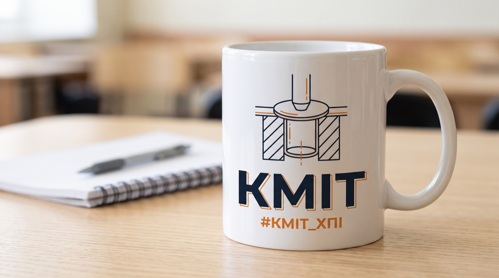

Чашка
Створи зображення: фотореалістичний макет білої керамічної чашки з дизайном для студентської спільноти кафедри КМІТ. На чашці — мінімалістична лінійна ілюстрація: пуансон витягує циліндричний стакан з плоскої круглої заготовки, під нею великий напис «КМІТ» і нижче дрібніше «#КМІТ_ХПІ». Кольори дизайну: темно-синій (#121826) і помаранчевий (#F28C28). Чашка стоїть на світлому дерев’яному столі поруч із зошитом, м’яке денне світло. Усі написи — українською кирилицею без помилок, жодних інших текстів і логотипів.